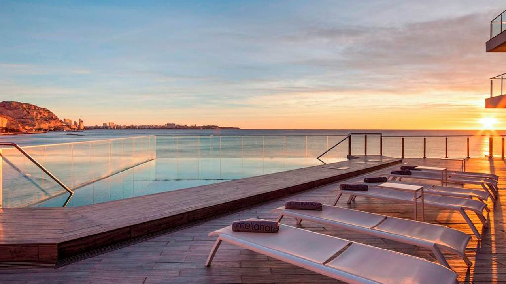
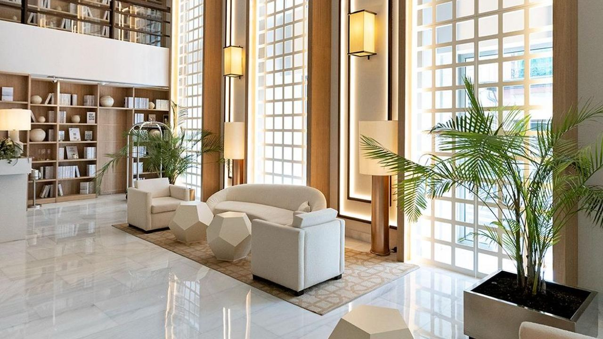
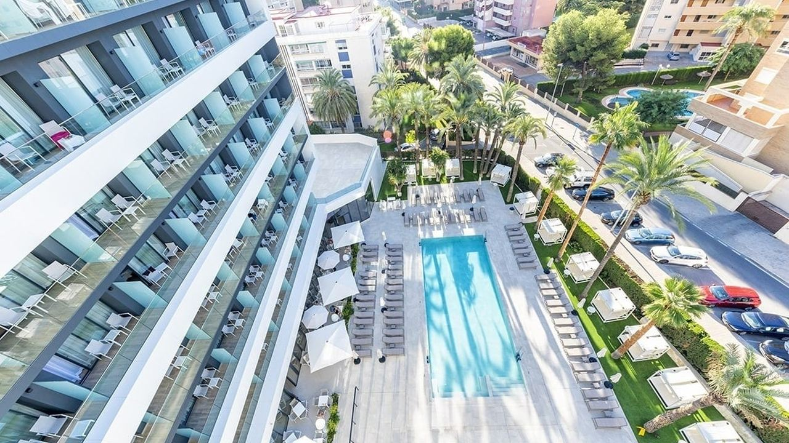
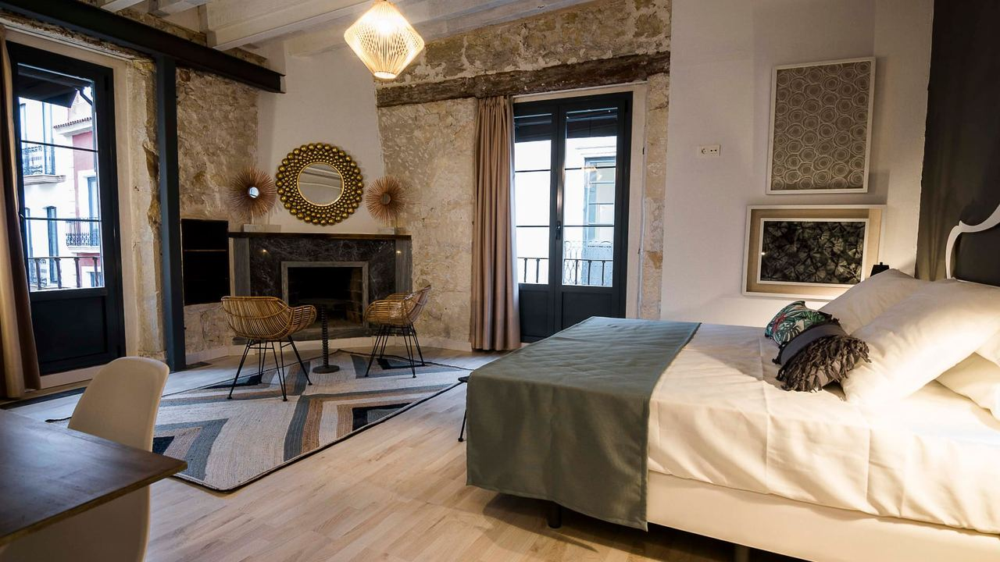
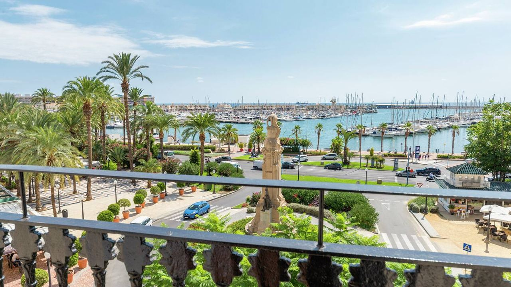
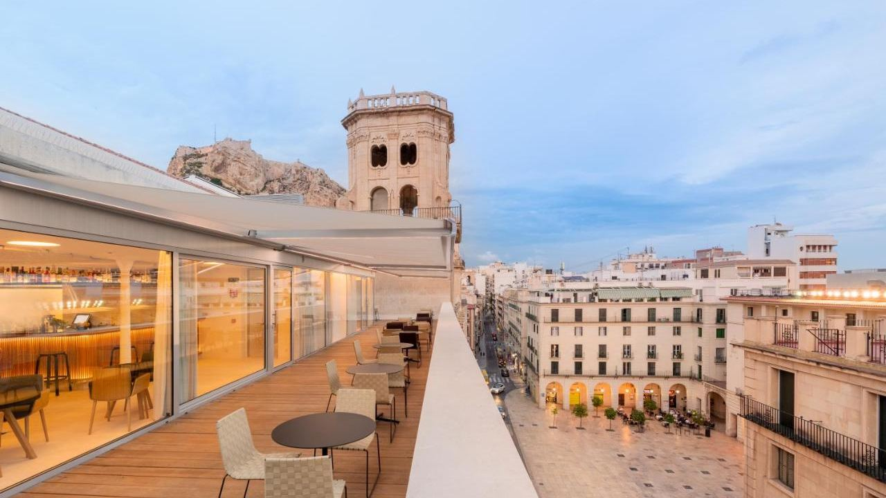
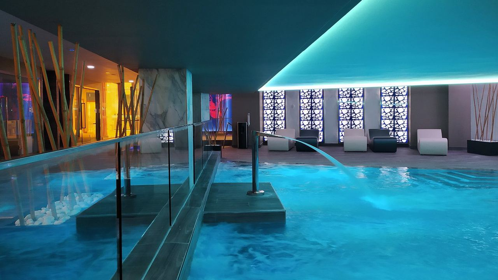
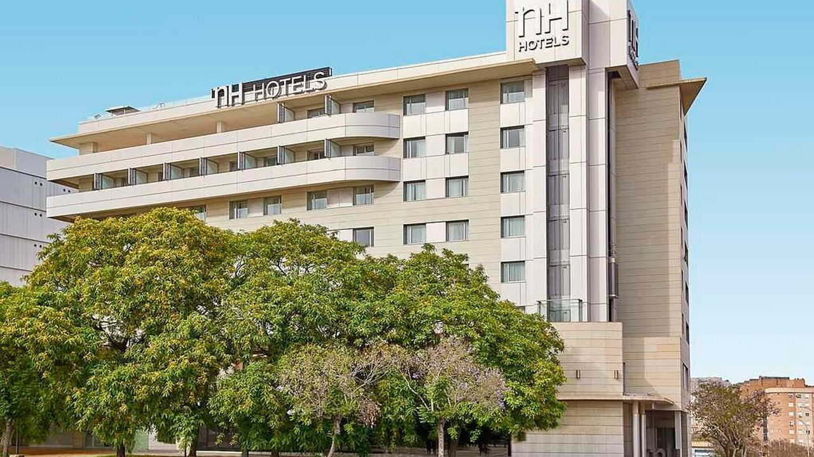

Orte · Costa Blanca
Die besten Hotels in Alicante
 Von Anita Orłowska · · aktualisiert · 3 Min. Lesezeit
Von Anita Orłowska · · aktualisiert · 3 Min. Lesezeit

Kurz gesagt: Für eine Städtereise nach Alicante wohnt man am besten in der Altstadt oder am Yachthafen: Hospes Amérigo (5 Sterne, in einem ehemaligen Kloster), Casa Alberola by Hilton und das Palacete S.XVII (nur für Erwachsene) sind die stilvollsten. Für den Strand liegen Meliá Alicante und Porta Maris am Postiguet, Port Alicante City & Beach an der Playa de San Juan. Eurostars Pórtico und NH Alicante sind praktische Optionen im Zentrum. Für Juni (Hogueras), Ostern und den Sommer früh buchen.
Alicante hat Hotels für jede Art von Reise, vom historischen Boutique-Hotel in der Altstadt bis zum großen Strandhotel mit Pool. Die Lage zählt mehr als die Sterne: Altstadt und Yachthafen sind ideal für Spaziergänge und Restaurants, die Playa de San Juan für Badeurlaub.
Hier unsere Auswahl, die wir oft Kunden empfehlen, die zu Besichtigungen an die Costa Blanca kommen.
Hospes Amérigo – 5 Sterne in einem ehemaligen Kloster

Mitten in der Altstadt, ein umgebautes Dominikanerkloster mit modernem Interieur, Dachpool und Spa mit Blick auf die Burg und einem bekannten Restaurant. Ideal für eine stilvolle Städtereise zu Fuß.
Meliá Alicante – am Strand Postiguet

Ein großes Hotel direkt zwischen Yachthafen und Strand El Postiguet. Viele Zimmer haben Meerblick, dazu Außenpool, Spa und Fitnessraum. Gut für Familien und alle, die den Strand vor der Tür wollen.
Hotel Boutique Alicante Palacete S.XVII – nur für Erwachsene

Ein kleines Hotel nur für Erwachsene in einem Palast aus dem 17. Jahrhundert in der Altstadt, mit individuell gestalteten Zimmern, Cocktailbar und Weinkeller. Perfekt für Paare.
Casa Alberola, Curio Collection by Hilton

Ein historisches klassizistisches Gebäude gegenüber Hafen und Explanada, restauriert als Boutique-Hotel mit Dachterrasse und Restaurant mit Schwerpunkt Meeresfrüchte.
Eurostars Pórtico Alicante

Ein komfortables Stadthotel neben dem Rathaus mit Dachterrasse über der Altstadt. Eine praktische Basis für Besichtigungen.
Hotel Spa Porta Maris by Meliá

Ein 4-Sterne-Hotel am Yachthafen, wenige Schritte vom Postiguet, mit Zimmern mit Meerblick und Spa mit beheiztem Innenpool.
Port Alicante City & Beach
Ein 4-Sterne-Superior-Hotel an der Playa de San Juan, nahe dem langen Strand und der Tram ins Zentrum, mit Sky Bar und Außenpool. Gut für Badeurlaub mit Stadtanbindung.
NH Alicante

Ein zuverlässiges Business- und Stadthotel nahe dem Zentrum, mit guter Anbindung an Bahnhof und Flughafenstraße.
Welche Gegend passt?
- Altstadt und Explanada – alles zu Fuß, ideal für den ersten Besuch.
- Postiguet und Yachthafen – Strand und Stadt zugleich.
- Playa de San Juan – langer Strand, ruhigere Abende und Tram ins Zentrum.
- Nahe dem Bahnhof – praktisch für Züge nach Madrid und Valencia.
Siehe auch Sehenswürdigkeiten in Alicante.
Häufige Fragen
Wo übernachtet man in Alicante am besten?
In Altstadt und an der Explanada für Besichtigungen und Restaurants, am Postiguet für den Strand im Zentrum und an der Playa de San Juan für ruhigeren Badeurlaub.
Gibt es 5-Sterne-Hotels in Alicante?
Ja. Am bekanntesten ist das Hospes Amérigo in der Altstadt, ein umgebautes Kloster mit Dachpool und Spa.
Welche Hotels in Alicante liegen am Strand?
Meliá Alicante und Porta Maris am Postiguet, Port Alicante City & Beach an der Playa de San Juan.
Wann sollte man ein Hotel in Alicante buchen?
Früh für Ostern, die Hogueras de San Juan im Juni und Juli–August, wenn die Preise am höchsten sind.
Vom Hotelgast zum Eigentümer
Viele unserer Kunden wohnen in Alicante, während sie Immobilien an der Küste besichtigen. Wenn Sie eine solche Reise planen, schreiben Sie uns, und wir organisieren Besichtigungen rund um Ihren Aufenthalt.
Quellen: Alicante City Tourism – Where to stay · Hospes Amérigo · Meliá Hotels